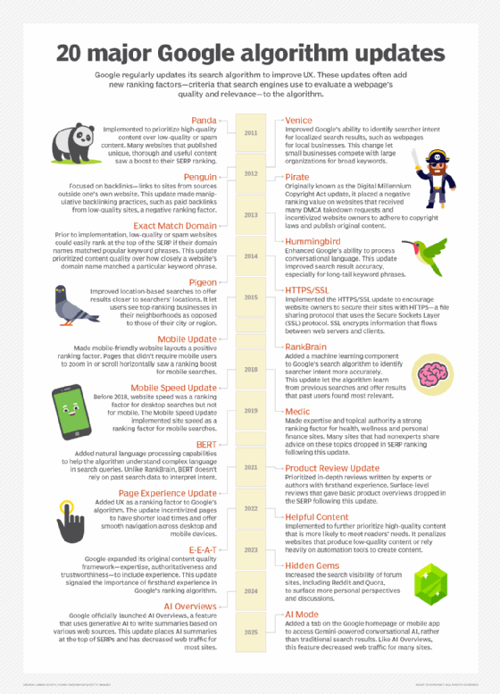

In 2025, Google’s algorithm updates have significantly reshaped the digital landscape, emphasizing content quality, user experience, and the integration of artificial intelligence (AI). For Pakistani businesses aiming to maintain or improve their online visibility, understanding these changes is crucial.
What Are Google Search Algorithms?
Google search algorithms are complex sets of rules and mathematical formulas that Google uses to retrieve data from its search index and instantly deliver the most relevant results for a user’s query. These algorithms evaluate numerous factors to rank webpages based on their relevance, quality, and usefulness.

How Do Google Search Algorithms Work?
When you enter a search query, Google doesn’t just pull any webpage that contains your keywords. Instead, it runs the query through its algorithms, which consider hundreds of factors to determine which pages will best answer your question or meet your intent.
The algorithms analyze things like:
- Keyword relevance: How well does the content match the search terms?
- Page quality: Is the page authoritative, trustworthy, and well-structured?
- User experience: Is the website easy to navigate, mobile-friendly, and fast-loading?
- Backlinks: How many other high-quality sites link to this page?
- Freshness: How recent and up-to-date is the content?
- Context and personalization: Factors like location, search history, and device type can influence results.
Key Components of Google’s Search Algorithms
Google’s search ranking isn’t determined by a single algorithm but rather by many working together, some of which include:
- PageRank: One of the earliest algorithms, it measures the quality and quantity of links to a page to estimate its importance.
- Panda: Focuses on content quality, penalizing sites with thin, duplicate, or low-value content.
- Penguin: “This update targets websites that use manipulative link-building tactics or spammy SEO practices.”
- Hummingbird: Improves understanding of the meaning behind queries, focusing on natural language and conversational search.
- RankBrain: A machine learning-based system that helps Google interpret ambiguous queries and deliver more relevant results.
- Mobile-Friendly Update: Gives priority to websites optimized for mobile devices.
- Core Web Vitals: Measures user experience metrics like loading speed, interactivity, and visual stability.
Why Are Google Search Algorithms Important?
Google’s algorithms ensure users find high-quality, relevant information quickly and efficiently. For website owners and SEO professionals, understanding these algorithms is crucial to optimize their sites and improve visibility in search results.
Google regularly updates its algorithms to combat spam, improve accuracy, and adapt to changing user behavior and technology, making SEO an ongoing process rather than a one-time task.
How Does Google’s Algorithm Work?
Google’s algorithm is a highly sophisticated system designed to find, evaluate, and rank billions of web pages to deliver the most relevant search results to users instantly. When you type a query into Google, the algorithm determines which web pages should appear and in what order. This process involves several key steps:
1. Crawling and Indexing
- Crawling: Google uses automated programs called crawlers or spiders (Googlebot being the main one) to systematically browse the web. These bots discover new and updated pages by following links from existing pages.
- Indexing: Once a page is crawled, Google analyzes its content (text, images, videos, meta tags, structured data, etc.) and stores this information in the Google Index, a massive database that acts like a digital library of the web.
2. Understanding the Query
Before retrieving results, Google’s algorithm needs to understand what you’re searching for. It interprets your query by considering:
- Keywords and context: It looks beyond just the keywords you typed to grasp the meaning and intent behind your query.
- Natural language processing (NLP): With advances like BERT (Bidirectional Encoder Representations from Transformers), Google understands the nuances and context of words in a sentence, including prepositions, order, and the overall meaning.
- Personalization: Google factors in your location, language, device type, and past search history to tailor results more precisely to your needs.
3. Ranking and Retrieval
Once your query is understood, Google’s algorithm searches its index to find pages that match your query. It then ranks these pages based on hundreds of factors (also called ranking signals), including:
- Relevance: How closely does the page’s content match your search intent?
- Authority: Is the page trustworthy and credible? This is often gauged by the quality and quantity of backlinks pointing to it.
- User Experience: How well does the page perform technically? This includes site speed, mobile-friendliness, secure connections (HTTPS), and ease of navigation.
- Freshness: For certain queries, more recent content may be prioritized (e.g., news or trending topics).
- Engagement Metrics: Data on how users interact with the page (bounce rate, time on page) can indirectly influence rankings.
4. Algorithm Components
Google’s ranking is influenced by many algorithmic components working together, such as:
- PageRank: Measures the link popularity of a page.
- Panda: Filters out low-quality or duplicate content.
- Penguin: Targets web spam and manipulative linking.
- Hummingbird: Enhances semantic search to better understand intent.
- RankBrain: An AI-based system that interprets complex or ambiguous queries to find the best results.
- Core Web Vitals: Focuses on page loading speed, interactivity, and visual stability to improve user experience.
5. Delivering Results
After processing and ranking, Google presents the results in order on the Search Engine Results Page (SERP). This includes:
- Organic listings: The natural, unpaid search results ranked by relevance.
- Featured snippets: Quick answers displayed at the top.
- Knowledge panels: Information boxes from trusted sources like Wikipedia.
- Local packs: For location-specific queries, showing local businesses.
- Ads: Paid placements relevant to the query.
6. Continuous Learning and Updates
Google constantly updates its algorithm — sometimes multiple times a day — to improve search quality, fight spam, and adapt to changing user behaviors and technology. Major updates like Core Updates can significantly impact website rankings.
Google also uses machine learning to refine its understanding of language and user intent, making the algorithm smarter over time.
Key Algorithm Updates in 2025
1. AI Overviews Integration
Google has introduced AI-generated summaries, known as AI Overviews, at the top of search results. These summaries aim to provide concise answers to user queries, requiring businesses to produce authoritative and well-structured content to be featured.
2. Helpful Content Update 2.0
This update rewards content that demonstrates deep expertise and firsthand experience. Websites with superficial or AI-generated content lacking human oversight may see declines in rankings. Marketing Done Right,
3. Link Spam and AI Content Detection
Google has enhanced its ability to detect and penalize low-quality backlinks and AI-generated content that lacks originality. Maintaining high-quality, human-authored content is more important than ever.
Implications for Pakistani Businesses
Enhanced Focus on Content Quality
Businesses must prioritize creating original, valuable, and user-centric content.
- Addressing specific customer queries and needs.
- Demonstrating expertise and authority in your industry.
- Ensuring content is well-researched and free from plagiarism.
Technical SEO Optimization
With the emphasis on user experience, technical aspects of your website play a crucial role
- Mobile-First Design: Ensure your website is responsive and functions seamlessly on mobile devices.
- Core Web Vitals: Optimize loading speed, interactivity, and visual stability.
- Structured Data: Implement schema markup to help search engines understand your content better.
Local SEO Considerations
For businesses targeting local audiences in Pakistan:
- Google Business Profile: Keep your profile updated with accurate information.
- Local Keywords: Incorporate location-specific keywords into your content.
- Customer Reviews: Encourage satisfied customers to leave positive reviews.
Adapting to the Changes
To stay ahead:
- Regular Content Audits: Assess and update existing content to meet current quality s0tandards.
- Continuous Learning: Stay informed about the latest SEO best practices and algorithm changes.
- Engage Professionals: Consider partnering with SEO experts to navigate the evolving landscape effectively.
What Are Google Algorithm Updates?
Google algorithm updates are changes made to the complex system that determines how search results are ranked and displayed. These updates aim to improve search quality by refining how Google evaluates websites for relevance, authority, user experience, and other factors.
Algorithm updates can be:
- Core updates: Broad changes to Google’s ranking system that affect search results significantly.
- Targeted updates: Focused on specific issues like spam, link quality, or page speed.
- Minor tweaks: Small refinements to enhance performance without major impact.
Google regularly rolls out updates, sometimes several times a day, but major updates usually happen a few times a year.
Why Are Algorithm Updates Important?
- They help Google maintain high-quality, relevant search results.
- They combat spammy or manipulative SEO tactics.
- They adapt to new technologies and changes in user behavior (like mobile use, voice search).
- They affect how websites rank, so businesses must adapt their SEO strategies to maintain or improve visibility.
How to Prepare for Algorithm Updates
- Focus on creating high-quality, user-focused content.
- Build natural, authoritative backlinks.
- Ensure your website is mobile-friendly and fast-loading.
- Monitor your site’s performance and rankings regularly.
- Stay informed about update announcements and industry insights.
- Avoid black-hat SEO tactics like keyword stuffing or buying links.
What’s Next for Google’s Algorithms?
- More Advanced AI and Machine Learning
Google will continue to integrate cutting-edge AI, like improvements beyond RankBrain and BERT, to better understand user intent, context, and complex queries. This means even smarter search results that feel more natural and conversational. - Greater Focus on User Experience (UX)
Following Core Web Vitals, Google will likely place even more emphasis on how users experience websites — including page speed, interactivity, visual stability, accessibility, and mobile usability. User-centric metrics will become increasingly important ranking signals. - Deeper Understanding of Multimedia Content
Google is improving its ability to index and rank images, videos, and audio. With the rise of visual and voice search, expect algorithms to get better at interpreting non-text content and integrating it into search results. - Enhanced Personalization & Privacy Balance
Google aims to provide more personalized results while respecting user privacy. This means leveraging user data thoughtfully to tailor search experiences without compromising security or anonymity. - Expanded Use of Natural Language Processing (NLP)
Further advances in NLP will help Google grasp subtle nuances, regional dialects, and conversational queries better, especially with voice assistants and multilingual searches. - Better Handling of Misinformation & Content Quality
Google will keep refining how it detects and demotes misleading, false, or low-quality content to maintain search result integrity and trustworthiness. - Integration with New Technologies
Expect more synergy between Google Search and emerging tech like augmented reality (AR), virtual reality (VR), and wearable devices, transforming how people search and consume information.
What This Means for Website Owners and SEO
- Prioritize high-quality, helpful content that truly serves your audience.
- Optimize site performance and user experience continuously.
- Keep up with evolving SEO best practices and technology trends.
- Focus on building trust and authority through transparency and reliability.
- Be ready to adapt quickly as Google rolls out new updates.
Conclusion
Google’s 2025 algorithm updates underscore the importance of quality, relevance, and user experience. For Pakistani businesses, adapting to these changes is essential to maintain online visibility and competitiveness. By focusing on high-quality content, technical optimization, and local SEO strategies, businesses can thrive in this dynamic digital environment.
For professional assistance in optimizing your website in line with the latest SEO practices, explore our Home Page, review our Pricing options, or view our Project Portfolio to see our successful implementations.